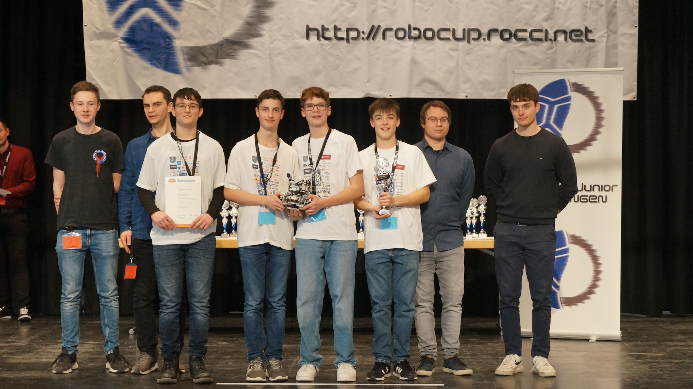

The team
From left to right: Dennis Skurka (Programmer), Julius Kimpfler (Programmer and constructor), Jan Müller (constructor) and Felix Wiedermann (constructor).


From left to right: Dennis Skurka (Programmer), Julius Kimpfler (Programmer and constructor), Jan Müller (constructor) and Felix Wiedermann (constructor).
Our soccer-robot "Ernie"

He's built using two ultrasonic sensors, an IR-seeker and a compass sensor. We used the lego mindstorms ev3, RobotC and visual studio code. The robot was programmed using c.

The dribbler is being used to keep the ball sticking to our robot and to "overcome" the opponent.
They are used to calculate the distance from the edges of the court.

It is used to remember where the opponent's goal is located, it only detects the general direction not the actual direction.

The IR-seeker is used to locate the ball. The ball sens out infrared rays which our IR-seeker collects and outputs a number ranging from 0-9. 1 is the very left 5 is the front and 9 the very right, 0 means ball not found.
Website created by: Dennis Skurka
pictures taken by: Felix Wiedermann